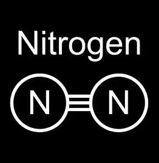
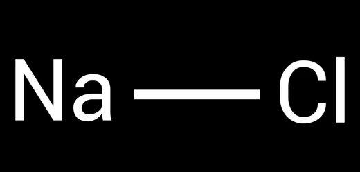
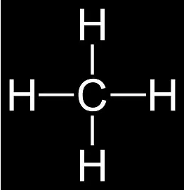

The ability of an atom(in a molecule) to attract shared electrons is called electronegativity. In a molecule, the difference between the electronegativity of the atoms is an indicator of the kind of bond the molecule has. For example, if the difference is 0 between the electronegativities, then it’s a nonpolar covalent bond.
The nonpolar covalent bond is formed when the electrons are equally shared between the atoms, therefore the distribution of electric charge is balanced between the atoms.
Using the difference in electronegativity of the atoms in the molecule we can find out if it’s a covalent bond or if it’s a ionic bond. Further more, we know, using the difference if the bond is nonpolar covalent or if it’s polar covalent:
For a difference equal to 0, it’s a nonpolar covalent bond
For a difference between 0 and 0.4 , it’s a slightly polar covalent bond
For a difference between 0.5 and 2.1 , it’s a polar covalent bond
For a difference bigger than 2.1 , it’s a ionic bond (most likely)
The ionic bond forms (usually) between a metal and a nonmetal, thanks to the big difference in electronegativity. Metals have low electronegativity(basically they don’t attract electrons, as they’d much rather give them away), while nonmetals have high electronegativity (they love to take the electrons they’re offered).
For example:
We have the nonpolar molecule \(\ce{N2}\). The electronegativity of N is 3.04, therefore the difference in electronegativity will be \(\Delta = 3.04 - 3.04=0\), so it’s a nonpolar covalent bond. This bond is mostly formed between atoms of the same element (nonmetal). I say mostly because, for example, we consider the C-H bond a nonpolar covalent bond. The electronegativity of H is 2.20 and the electronegativity of C is 2.55 , so the difference is 0.35.

In NaCl (sodium chloride, or most commonly table salt), Na has an electronegativity of 0.9, while Cl has an electronegativity of 3.0. The difference is 2.1 , so it’s a ionic bond.

The polarity of a molecule
When atoms in a molecule share electrons unequally, they create what is called a “dipole moment.” When two electrical charges of equal magnitude and opposite sign are in a molecule, the dipole moment gets established. The dipole moment is a vector usually measured in Debye, pointing from + to -.
The shape and polarity of its bonds determine the polarity of the molecule. A molecule that has polar bonds can be overall not polar depending on its shape. An example of such a molecule is \(\ce{CO2}\), where its bonds are polar (C=O), but because it’s a linear molecule, the bond dipoles cancel each other out. The molecular geometries of molecules that can have the dipole moment zero are linear, trigonal planar, square planar, tetrahedral, trigonal bipyramidal, and octahedral.
A good application of this topic is the solubility of compounds in polar or non-polar solvents. Polar compounds will be soluble in polar solvents, and non-polar compounds will be soluble in non-polar solvents.
Is the \(\ce{CH4}\) molecule polar? What about its bonds?
Solution:
The \(\ce{CH4}\) molecule is nonpolar, thanks to its structure. The bonds are also considered to be nonpolar, given the very little electronegativity difference, even if they are slightly polar.

Is \(\ce{CS2}\) soluble in \(\ce{H2O}\)? Why?
Solution:
\(\ce{CS2}\) is not soluble in \(\ce{H2O}\) because \(\ce{CS2}\) is a non-polar molecule, even if the bonds are polar (it has a linear structure). On the other hand, \(\ce{H2O}\) is a polar molecule; therefore, it is not a good solvent for carbon disulfide.
Given the electronegativity of F (3.98) and the electronegativity of Na (0.93), evaluate the kind of molecule the two atoms can form.
Solution:
Na and F form an ionic compound, \(\ce{NaF}\). We can see that it is ionic using the electronegativity difference between the two atoms: \(3.98 - 0.93 = 3.05\), way over 2.1, so it’s an ionic compound.